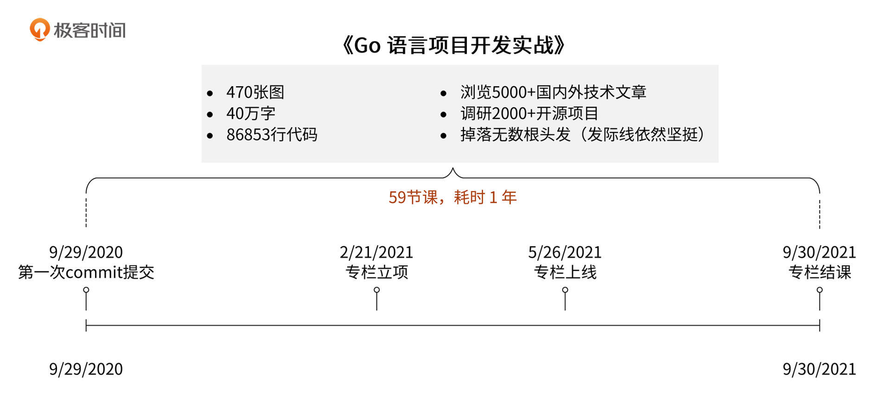
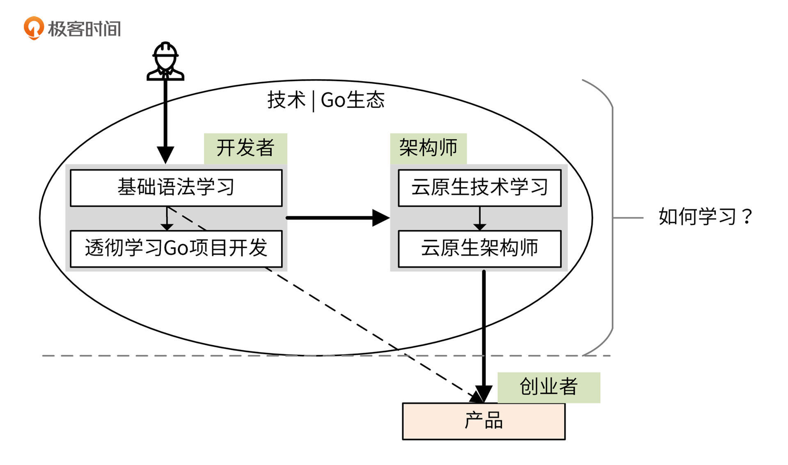
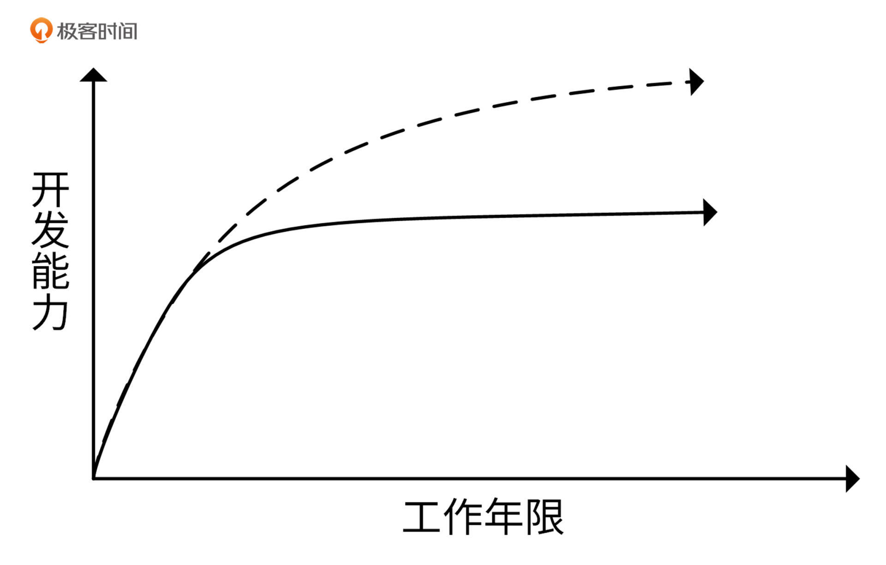
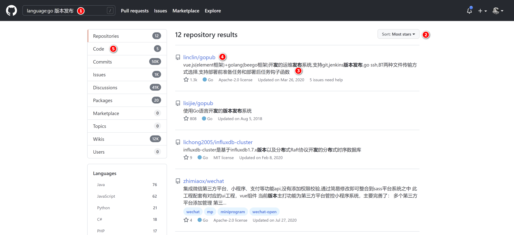
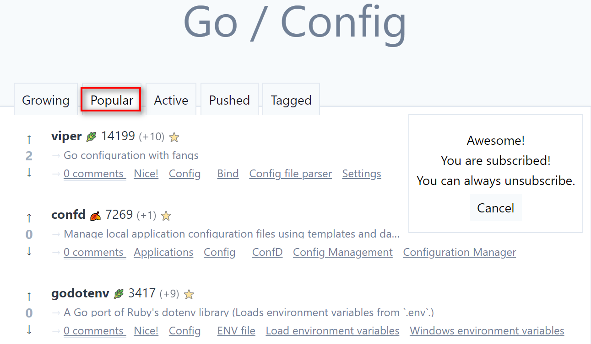
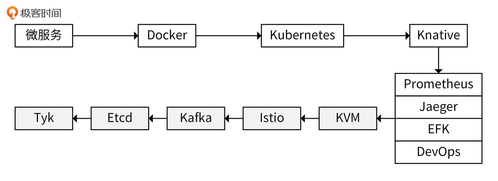

- 00 开篇词 从 0 开始搭建一个企业级 Go 应用.md.html
- 01 IAM系统概述：我们要实现什么样的 Go 项目？.md.html
- 02 环境准备：如何安装和配置一个基本的 Go 开发环境？.md.html
- 03 项目部署：如何快速部署 IAM 系统？.md.html
- 04 规范设计（上）：项目开发杂乱无章，如何规范？.md.html
- 05 规范设计（下）：commit 信息风格迥异、难以阅读，如何规范？.md.html
- 06 目录结构设计：如何组织一个可维护、可扩展的代码目录？.md.html
- 07 工作流设计：如何设计合理的多人开发模式？.md.html
- 08 研发流程设计（上）：如何设计 Go 项目的开发流程？.md.html
- 09 研发流程设计（下）：如何管理应用的生命周期？.md.html
- 10 设计方法：怎么写出优雅的 Go 项目？.md.html
- 11 设计模式：Go常用设计模式概述.md.html
- 12 API 风格（上）：如何设计RESTful API？.md.html
- 13 API 风格（下）：RPC API介绍.md.html
- 14 项目管理：如何编写高质量的Makefile？.md.html
- 15 研发流程实战：IAM项目是如何进行研发流程管理的？.md.html
- 16 代码检查：如何进行静态代码检查？.md.html
- 17 API 文档：如何生成 Swagger API 文档 ？.md.html
- 18 错误处理（上）：如何设计一套科学的错误码？.md.html
- 19 错误处理（下）：如何设计错误包？.md.html
- 20 日志处理（上）：如何设计日志包并记录日志？.md.html
- 21 日志处理（下）：手把手教你从 0 编写一个日志包.md.html
- 22 应用构建三剑客：Pflag、Viper、Cobra 核心功能介绍.md.html
- 23 应用构建实战：如何构建一个优秀的企业应用框架？.md.html
- 24 Web 服务：Web 服务核心功能有哪些，如何实现？.md.html
- 25 认证机制：应用程序如何进行访问认证？.md.html
- 26 IAM项目是如何设计和实现访问认证功能的？.md.html
- 27 权限模型：5大权限模型是如何进行资源授权的？.md.html
- 28 控制流（上）：通过iam-apiserver设计，看Web服务的构建.md.html
- 29 控制流（下）：iam-apiserver服务核心功能实现讲解.md.html
- 30 ORM：CURD 神器 GORM 包介绍及实战.md.html
- 31 数据流：通过iam-authz-server设计，看数据流服务的设计.md.html
- 32 数据处理：如何高效处理应用程序产生的数据？.md.html
- 33 SDK 设计（上）：如何设计出一个优秀的 Go SDK？.md.html
- 34 SDK 设计（下）：IAM项目Go SDK设计和实现.md.html
- 35 效率神器：如何设计和实现一个命令行客户端工具？.md.html
- 36 代码测试（上）：如何编写 Go 语言单元测试和性能测试用例？.md.html
- 37 代码测试（下）：Go 语言其他测试类型及 IAM 测试介绍.md.html
- 38 性能分析（上）：如何分析 Go 语言代码的性能？.md.html
- 39 性能分析（下）：API Server性能测试和调优实战.md.html
- 40 软件部署实战（上）：部署方案及负载均衡、高可用组件介绍.md.html
- 41 软件部署实战（中）：IAM 系统生产环境部署实战.md.html
- 42 软件部署实战（下）：IAM系统安全加固、水平扩缩容实战.md.html
- 43 技术演进（上）：虚拟化技术演进之路.md.html
- 44 技术演进（下）：软件架构和应用生命周期技术演进之路.md.html
- 45 基于Kubernetes的云原生架构设计.md.html
- 46 如何制作Docker镜像？.md.html
- 47 如何编写Kubernetes资源定义文件？.md.html
- 48 IAM 容器化部署实战.md.html
- 49 服务编排（上）：Helm服务编排基础知识.md.html
- 50 服务编排（下）：基于Helm的服务编排部署实战.md.html
- 51 基于 GitHub Actions 的 CI 实战.md.html
- 特别放送 Go Modules依赖包管理全讲.md.html
- 特别放送 Go Modules实战.md.html
- 特别放送 IAM排障指南.md.html
- 特别放送 分布式作业系统设计和实现.md.html
- 特别放送 给你一份Go项目中最常用的Makefile核心语法.md.html
- 特别放送 给你一份清晰、可直接套用的Go编码规范.md.html
- 直播加餐 如何从小白进阶成 Go 语言专家？.md.html
- 结束语 如何让自己的 Go 研发之路走得更远？.md.html
- 捐赠
结束语 如何让自己的 Go 研发之路走得更远？
你好，我是孔令飞。不知不觉，我们的这段Go学习之旅就要走到终点了。
首先，恭喜你耐心看完了整个专栏，相信你一定学到了不少知识。还要特别感谢那些常常向我反馈问题、提出改进建议的同学。因为有你们，这门课才能越来越完善，和你们的交流也让我获益良多。
先和你分享下我做这门课的一些“心路历程”。在过去的5年里，我不断学习，从一个Go新手一步步向Go老鸟迈进。在学习的过程中，我遇到了很多困难，也收获了一些心得。因为我是一个热爱分享的人，也特别想把这些困难的解决方法，以及沉淀下来的学习心得分享给更多的人，所以才有了这门课。
俗话说，活到老学到老，在Go研发的道路上，我跟你一样仍然是个学生。既然是学生，就有知识盲区，在写专栏的过程中，我很怕因为自己水平不够误导大家。所以，在前期我做足了调研，几乎把专栏中每一个大知识块儿的业内实现都翻了个底朝天，就是为了构建一个专业的知识体系。这门课最终的质量基本符合当初的预期，也算是没辜负我熬的那些夜和掉的无数根头发了。
这里就用一张图片来概括这个历时一年的过程吧：

希望这些呈现给你的具体数据，可以让你对自己所学知识的专业度抱有更多的信心。
陪你走完这一程Go学习之旅是我的荣幸，这门课虽然结束了，但你的学习和成长之路才刚刚开始。那么，如何在Go研发之路上走得更远呢？
在我看来，一个Go开发者的完整职业生涯，会经历开发者阶段、架构师阶段、创业者阶段：

处于这三个不同的阶段，你要扮演的角色也是不同的。
- 开发者阶段：在这个阶段，你可以使用Go语言，完成产品经理、领导分配的各种开发任务，中间会掺杂一些架构设计的工作，但这些架构设计通常局限在跟开发任务相关的范围内。
- 架构师阶段：在这个阶段，你已经熟练或者精通Go语言的基本语法，并能够驾轻就熟地使用Go语言开发出一个大型的应用。除此之外，你还能从系统资源层面、应用层面、应用生命周期管理层面来设计整个系统架构，最终构建出一个高性能、高可靠、可维护、可扩展的能够满足产品需求的应用。
- 创业者阶段：在开发者阶段和架构师阶段，你本质上还是一个技术导向的从业人员。但在创业者这个阶段，你的重心已经从技术转向产品，成为整个业务线的负责人。这不是因为技术不重要，而是因为你已经有了深厚的技术积累。这时候，技术对你来说更多是一种用来创造优秀产品的工具。
其实，在开发者阶段和架构师阶段，我们的最终目的也是开发一个产品，但和创业者阶段的侧重点有所不同。在开发者阶段，我们主要是完成技术Leader分配的任务；在架构师阶段，我们则更多地扮演一个技术Leader的角色，是底层技术的主导者和决策者，拥有更大的话语权和职责。在这两个阶段，我们还应该通过学习，不断地补全自己的Go技术生态，最终尽可能地将整个Go技术生态中的点和面装入脑海中。
要完成开发者 -> 架构师 -> 创业者的角色转变，你就需要在日常的工作中不断学习、思考和实践。而学习，是最基础，也最重要的一个环节。因为这门课是一个技术专栏，所以接下来我们就重点看三个阶段中的前两个，聊聊如何学习，才能使自己成为一名优秀的开发者，然后成功晋级到一位优秀的架构师。
开发者阶段
作为一名Go开发者，首先你会进入开发者阶段。在开发者阶段，我们可以通过三个步骤，来成为一名优秀的Go开发工程师。需要说明下，这三步虽然是由浅入深的，但是可以并行。你不用学完所有基础语法知识才研究优秀项目、上手实战，可以根据需要穿插进行。
第一步：基础语法学习
我们可以精读一到两本经典的Go语言基础教程，这里我向你推荐两本书：《Go程序设计语言》和《Go语言编程》。
如果你还有时间和精力，还可以再看两本关于场景化编程的书籍：《Go 并发编程实战》（第2版）和《Go Web编程》。
你可以先通读《Go程序设计语言》这本书，掌握Go的基础语法。在学习的过程中，你可能会遇到一些知识点不太理解，或者看了就忘的情况，没关系，先坚持学习完。如果你还有精力，可以选择继续读《Go语言编程》这本书。这两本书啃下来，你就有了充足的Go基础语法储备，为下一步的研究优秀项目打下了坚实的基础。
第二步：认真研究一个优秀的项目
有了一定的Go基础语法储备后，就该认真研究一个优秀的项目了。你不仅要学习项目中包含的知识，还要学习它的构建思路。我们来看下工作年限和开发能力的关系：

如上图所示，工作年限和开发能力之间是一个抛物线关系：刚开始的时候，随着工作年限的增长，开发能力会提升得很快；但是，当工作年限增长到一定程度，开发能力的增长就放缓了。这是因为，到达一定工作年限后，我们更多是去反复使用已有的知识和经验积累，所以开发能力提升有限。
那么如何才能提高开发能力的天花板呢？在我看来，这时应该去认真研究下如何构建一个优秀的项目，来扩充自己的知识和经验库。一次学习，整个研发生涯都会受益。《Go 语言项目开发实战》就是一门带你研究优秀项目的课程，只要你充分消化吸收了这门课的知识，相信你的Go项目研发能力已经得到了极大的提升。
第三步：项目实战
对优秀项目有了一定研究之后，你应该以需求为驱动，通过实践来加深对Go基础语法的掌握和理解。
在实践的过程中，用需求来驱动学习，不仅效率是最高的，而且学习的过程也是工作产出的过程，可以说是一箭双雕。这里又有3个问题：
- 需求从哪里来？
- 如何查找优秀的开源项目？
- 如何进行二次开发？
接下来，我们就分别看下这3个问题。
问题一：需求从哪里来？
在我看来，需求来源于工作。这些需求可以是产品经理交给你的某一个具体产品需求，也可以是能够帮助团队提高工作效率的工具，还可以是能够提高自己工作效率的工具。
总之，如果有明确的工作需求最好，如果没有明确的需求，我们就要创造需求。我们可以思考工作中的痛点、难点，并将它们转化成需求。比如，团队发布版本，每次都是人工发布，需要登陆到不同的服务器，部署不同的组件和配置。这样效率低不说，还容易因为人为失误造成现网故障。这时候，你就可以将这些痛点抽象成一个需求：开发一个版本发布系统。
有了需求，接下来我们就要完成它，也就是进入到实践环节。那么如何实践呢？在我看来精髓在于两个字：“抄”和“改”。
上面，我们抽象出了一个需求：开发一个版本发布系统。如果自己从0开发出一套版本发布系统，工作量无疑是巨大的。而且，以我们这个阶段的水平，即使花费了很多时间开发出一个版本发布系统，这个系统在功能和代码质量上也无法跟一些优秀的开源版本发布系统相比。
所以，这时候最好的方法就是在GitHub上找到一个优秀的版本发布系统，并基于这个系统进行二次开发。这样，你不仅能学习到一个优秀开源项目的设计和实现，还能够以最快的速度完成版本发布系统的开发。
问题二：如何查找优秀的开源项目？
那么，就到了我们刚才说的第二个问题：如何查找优秀的开源项目？放在这里，就是如何在GitHub上找到优秀的版本发布系统。
下面，我把我自己的方法分享给你。我主要通过5个步骤来搜索，如下图所示：

这里我结合图片，具体说明下这5个步骤。
- 在GitHub搜索栏中按语言搜索：
language:go 版本发布中，language:go说明我们要搜索语言类型为Go语言的项目；版本发布是我们搜索项目时的关键词。这个关键词对搜索结果影响很大，需要你合理填写。这里有个技巧，如果搜索版本发布，搜索出的项目很少，那么可以减少关键词再次搜索，比如搜索发布。 - GitHub搜索页面的
Sort options选择Most stars： 因为GitHub项目很多，我们不可能看完所有搜索出来的项目，所以这里我们要选择性地去查看。你可以通过Most stars进行排序，一般来说Star数越多说明项目越受欢迎，而受欢迎的原因很可能是整个项目在同类项目中比较优秀。根据我之前的搜索经验，一些Star数少的项目也可能很优秀，最终还是需要你根据自己的理解去判断。 - 看描述：因为项目比较多，我们不可能认真去研究每个项目，所以要快速了解项目，最简单的方式是先看描述。如果描述符合预期，那么可以将这个项目在新的浏览器Tab页打开，或者将项目地址保存起来，等初步筛选完所有项目后，再详细查看这个项目的README以及代码。
- 看项目名字：一些优秀的项目可能没有描述，这时候可以通过项目的名字来判断。
- 根据Code做筛选：如果我们搜索的项目很冷门，搜索GitHub后只有寥寥几个搜索结果，而且搜索出的项目也不是我们期望的。那么这时候，你可以从
Code中来筛选。
通过上面这5步，我们初步搜索出了匹配的项目，并知道了如何对这些项目做初步的筛选。接下来，你就需要按页来筛选页面中的开源项目，然后从第1页一直筛选到第100页。GitHub一页默认会展示10个开源项目，所以，如果按照这种方法，最终你可能需要调研10 * 100 = 1000个开源项目。当然，也不一定每次都要从第1页一直看到第100页，如果后面的项目明显都跟预期的需求不匹配，可以不用再继续看了。
研究完GitHub上的开源项目，这时候我还建议你通过libs.garden，再查找一些开源项目。libs.garden的主要功能是库（在 Go 中叫包）和应用的评分网站，是按不同维度去评分的，例如增长速度（根据新增 Star 数排序）、受欢迎程度（按 Star 数排序）、活跃度等。
libs.garden 包含了很多编程语言的评分，包括 Go 语言，地址为 https://libs.garden/go。你可以通过以下3步查找需要的开源项目：
- 打开 https://libs.garden/go；
- 根据我们需要的功能判断其类别，Go 的所有类别可以参考这个链接 。例如，配置文件解析应该属于 Config 类；
- 打开所属类别，根据 Popular 进行排序，如下图所示：

执行完这三步，我们就从上图的第 1 行开始，根据 Repository 的描述判断当前 Repository 有没有可能是我们要找的包。如果有，就打开 Repository，阅读它的README.md.html 来进一步判断。如果判断出可能是我们要找的包，并且各方面都还可以，就 clone 下来，根据其 README.md.html 中的帮助文档，编写代码并测试其功能。
研究完上一个 Repository 之后，我们继续根据排序，以相同的方法研究第 2 个 Repository，并以此类推，直到找到满意的包，或者GitHub Star 数小于某个预期值为止。用这样的方法，我们应该可以找到符合要求的优秀开源包，而且该开源包极有可能是“最”优秀的包。
此外，GitHub 上的 awesome-go 项目也根据分类记录了很多包和工具，你也可以在这个项目中寻找。我的建议是优先从GitHub上找，再在 libs.garden 上找，最后再参考 awesome-go项目。
到这里，我们已经通过自己的调研，找到了一堆GitHub上的开源项目。为什么我们要找这么多开源项目呢？主要目的有两个：
- 确保自己基于一个最优的开源项目来进行二次开发，一开始便站上至高点。
- 填充自己脑海中的Go生态图。
不过，这些开源项目只是经过了初步筛选，里面有很多是不满足我们需求的，甚至可能跟我们的需求完全不一致。所以，我们还需要进行二次筛选，可以通过精读开源项目的README来筛选。如果有必要，并且项目部署简单，你也可以部署这个开源项目，亲自体验一下。
经过第二次的筛选，我们已经筛选出了一些能够满足要求的优秀开源项目。这时候，我们还需要再经过一轮筛选。这轮筛选，我们要从各方面来对比这些开源项目，并从中选出一个最合适的开源项目，来进行二次开发。这个开源项目，你可以自信地跟你老板说它是一个最优解。
问题三：如何进行二次开发？
接下来，你就可以基于这个项目进行二次开发，最终出色地完成设定的需求。那么如何对选定的项目进行二次开发呢？我总结了5个步骤：
- 手动编译、部署这个开源项目。
- 阅读项目的README文档，跟着README文档使用这个开源项目，至少运行一遍核心功能。
- 阅读核心逻辑源码，在不清楚的地方，可以添加一些 fmt.Printf 函数，来协助你理解代码。
- 在你理解了项目的核心逻辑或者架构之后，就可以尝试添加/修改一些匹配自己项目需求的功能，添加后编译、部署，并调试。
- 二次开发完之后，你还需要思考下后续要不要同步社区的代码，如果需要，如何同步代码。
在你通过“抄”和“改”完成需求之后，记得还要编写文档，并找个合适的时机在团队中分享你的收获和产出。这点很重要，可以将你的学习输入变成工作产出。
看到这里，你可能想说：我开发一个项目而已，调研这么多项目，花这么多时间，值得吗？我觉得是值得的，因为这种学习方式会带来下面这几个好处。
- 最优解：你可以很有底气地跟老板说，这个方案在这个类别就是业界No.1。
- 高效：基于已有项目进行二次开发，可以提高开发和学习效率。
- 产出：在学习的过程中，也有工作产出。个人成长、工作贡献可以一起获得。
- 知识积累：为今后的开发生涯积累项目库和代码库。GitHub就是一个大的代码仓库，里面几乎囊括了你开发过程中需要的所有技术实现。你需要做的其实就是找到其中的最优实现，并升级成自己的实现。这是一个从量变到质变的过程，最终，你的研发模式会变成
Ctrl + C+Ctrl + V。这首先意味着你的开发工作会越来越轻松；另外，你Ctrl + C的是一个优秀的开源项目或代码，Ctrl + V的是经过你改进后的代码，这就意味着，你基于这个开源项目或代码二次开发后的实现一定是(你, GitHub最优解)二元组中最好的一个实现。
到这里，我就完整讲述了开发者阶段的“三步走”学习法，这三步分别是基础语法学习、研究一个优秀项目和进行项目实战。用这种方法进行学习，你不仅能非常高效地开发出一个优秀的功能，而且也能得到老板的认可，最终使你在年底绩效考核时顺利拿到优秀员工称号。
架构师阶段
在开发者阶段，你通过自己的努力成为一名优秀的Go开发工程师之后，可能会遇到职业瓶颈。这时候，你突破瓶颈的最好方式就是转型架构师（需要说明下，这里的架构师是技术架构师，而不是售前架构师）。架构师有很多方向，在云原生技术时代，转型为云原生架构师对学Go语言的我们来说是一个不错的选择。现在的我也在这个道路上前进，期待和你一起成长。
要成为云原生架构师，首先要学习云原生技术。云原生技术有很多，我推荐的学习路线如下图所示：

通过学习微服务、Docker、Kubernetes、Knative、Prometheus、Jaeger、EFK、DevOps这些技术，你可以掌握云原生中的核心技术栈；通过学习KVM、Istio、Kafka、Etcd、Tyk，你可以补全你的云原生核心技术栈。如果你还有精力，还可以再学习下TKEStask、Consul、Cilium、OpenShift这些项目。下面，我给你介绍一些不错的参考资料。
- 微服务：《微服务设计》
- Docker：《Docker技术入门与实战》（第3版）、《Docker ——容器与容器云》（第2版）
- Kubernetes ： 《Kubernetes权威指南：从Docker到Kubernetes实践全接触》（第4版）、《基于Kubernetes的容器云平台实战》
- Knative：Knative Documentation
- Prometheus：Prometheus Documentation
- Jaeger ：Jaeger Documentation
- KVM：《KVM虚拟化技术 : 实战与原理解析》
- Istio：《云原生服务网格Istio：原理、实践、架构与源码解析》
- Kafka：《Apache Kafka实战》、《Apache Kafka源码剖析》
- Etcd：etcd实战课
- Tyk：Tyk Open Source
- TKEStask：TKEStack Documentation
- Consul：Consul Documentation
- Cilium：Cilium Documentation
- OpenShift ：《开源容器云OpenShift：构建基于Kubernetes的企业应用云平台》
如果需要的话，你还可以参考我整理的awesome-books，里面有更全面的参考资料。
学习了上面的技术之后，你其实已经具备了一名云原生架构师需要的技术基础，能够比较全面地构建整个云原生技术栈。接下来你需要做的，就是在工作中积极主动地承担更多的架构工作，你在团队中的角色会慢慢地从一名开发者转变成一名架构师。
在架构师阶段，你应该继续学习，但这时候学习的侧重点不再是具体深入的技术细节。这不是因为细节不重要，而是因为以你当前的技术能力，只要简单了解，你就能知道具体是怎么构建的。这个阶段，你学习的重点是增强自己的架构能力。你可以通过很多方式来使自己拥有这些能力，我推荐下面这几种：
- 调研竞品，了解竞品的架构设计和实现方式。
- 参加技术峰会，学习其他企业的优秀架构设计，例如ArchSummit全球架构师峰会、QCon等。
- 参加公司内外组织的技术分享，了解最前沿的技术、架构和解决方案。
- 关注一些优秀的技术公众号，学习其中高质量的技术文章。
- 作为一名创造者，通过积极思考，设计出符合当前业务的优秀架构。
需要注意，在架构师阶段你仍然是一名技术开发者，一定不能脱离代码。你可以通过下面这几个方法，让自己保持Code能力：
- 以Coder的身份参与一些核心代码的研发。
- 以Reviewer的身份Review成员提交的PR。
- 工作之余，阅读项目其他成员开发的源码。
- 关注一些优秀的开源项目，调研、部署并试用。
创业者阶段
成为了一名优秀的架构师，就意味着你已经，或者将要触碰到技术的天花板了，那这时候如何突破呢？
在我看来，一个比较好的方向是突破技术的圈子，把技术当成一种工具，用这个工具来创造一个优秀的产品。这时候，你其实已经从一个技术人员转型成为一个创业者。这个时候的天花板，对你来说可以是无限高的：你可以通过努力，成为公司的经理、总裁甚至CEO，也可以成为行业TOP公司的创始人。
至于如何扮演好一个创业者角色，内容太多，变化也太多，而且跟本专栏的技术性质不匹配，所以这里就索性留一些空白，等着你来填充。总之，那时候就是：技术在手，天下我有！
写在最后
感谢你陪我走完了这段历时4个月的Go学习之旅。不过，站在终点的你可以看到，你的Go研发之路才刚刚开始。希望我今天分享的这些学习和工作心得，能帮你在这条路上走得更远。
看到这里，你可能觉得我们之间的关系就这样结束了？不，没有结束，你可以通过下面这两步继续跟我保持联系，继续探讨如何开发Go项目，以及课程中的一些疑难问题。
- 步骤一：请给这门课的实战项目 点个Star。IAM项目会持续升级维护，这个Star绝对不亏！
- 步骤二：如果还有关于课程的问题需要咨询，或者想了解我熬夜写完专栏，发际线依然坚挺的秘诀（不点Star不分享，哈哈），可以加我微信，WeChat：
echo bmlnaHRza29uZw==|base64 -d。
最后，我还给你准备了一个调查问卷。题目不多，大概两分钟就可以填完，主要是想听一下你对这门课的看法和建议。期待你的反馈！-
© 2019 - 2023 Liangliang Lee. Powered by gin and hexo-theme-book.